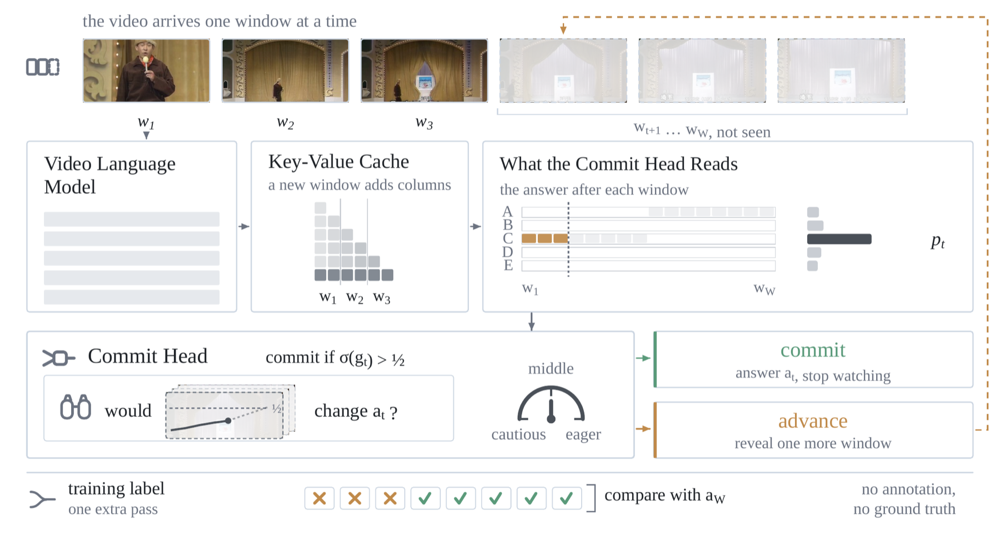
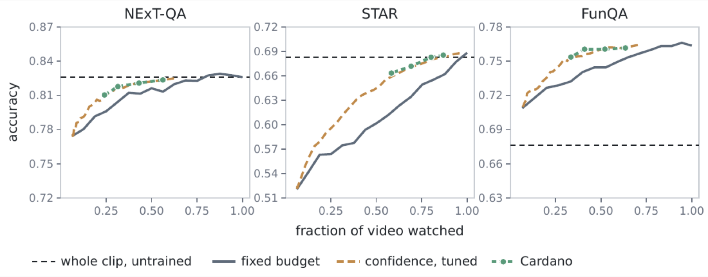
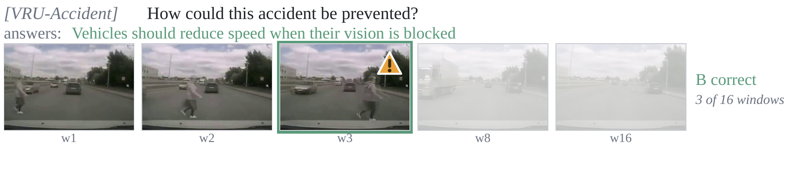

Learning when to stop watching
A streaming video model normally watches a clip to the end before answering. Cardano decides, while the video is still playing, that watching more of it would not change its answer — and stops there.
The decision is made by a 40-parameter linear head that reads nine features of the model's own answer distribution. It reads no hidden state, runs at a single global operating point, and is never tuned per dataset. The same head, fit once, transfers unchanged across three backbones and onto benchmarks it was never fit on.

Accuracy and fraction of video watched on Qwen2.5-VL-7B, against a matched causal budget that watches the same number of leading windows:
| Benchmark | Cardano | Watched | vs. matched budget |
|---|---|---|---|
| STAR | 67.2 | 0.69 | +3.7 [+2.4, +5.1] |
| NExT-QA | 81.8 | 0.31 | +1.3 [+0.3, +2.3] |
| FunQA | 76.0 | 0.41 | +1.9 [+0.9, +3.0] |
| Video-MME | 65.1 | 0.59 | +2.5 [+0.6, +4.4] |
Every interval excludes zero and holds on 10 of 10 head-fit seeds. On LLaVA-OneVision-7B the same unrefit head gives +3.5, +2.3 and +2.4 on the first three.
The saving is what the stopping head buys. Where accuracy also improves on an off-the-shelf backbone, that comes from fine-tuning the answerer.

Eight episodes, one strip each. All sixteen windows are shown; the boxed window is where the head committed, and everything to its right is faded because the model never encoded it. Two episodes are failure cases, included deliberately.
A pedestrian is already crossing in the first window. The head commits at the third of sixteen and answers correctly, so the answer exists while the clip is still playing rather than after it ends.

@misc{galoaa2026cardano,
title = {Cardano: Learning When to Stop Watching},
author = {Galoaa, Bishoy and Hasan, Sadid A. and Ostadabbas, Sarah},
year = {2026},
note = {Code: https://github.com/ostadabbas/Cardano;
Weights: https://huggingface.co/bishoygaloaa/cardano}
}